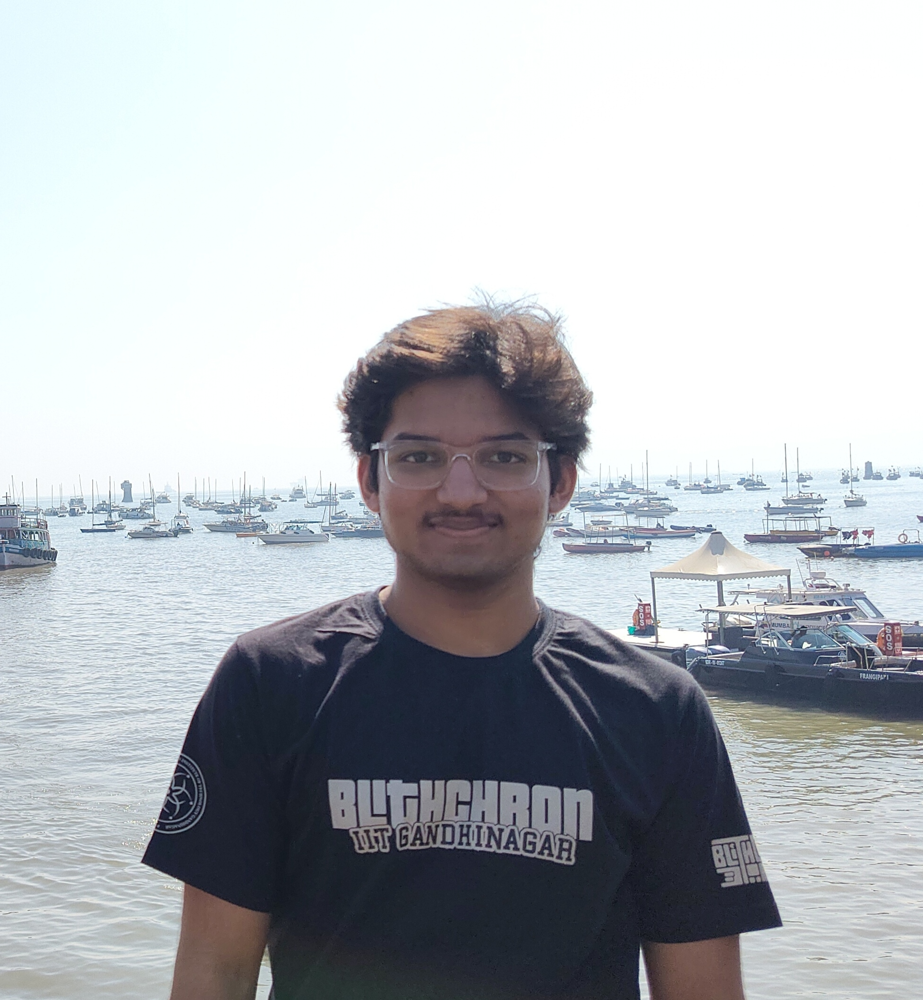

Computer Science — IIT Gandhinagar
I like building things that actually work.
CS undergrad at IIT Gandhinagar, mostly into systems, algorithms and applied ML. I like projects where you can't just vibe your way through — there's real hardware, real constraints, or both.
Lately I've been doing stuff with RISC-V, network analysis, and recommendation systems.
I regularly play volleyball and represent IIT Gandhinagar at inter-college tournaments, including IISM 2025. I was also a member of Mean Mechanics, IITGN’s robotics club.
